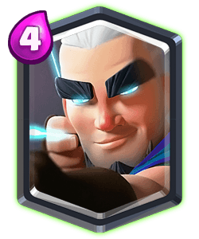

Tipo de Cartas


Clash Royale es un juego de estrategia en tiempo real en el que podremos enfrentarnos a otros jugadores a través de Internet en frenéticos duelos protagonizados por los míticos personajes de "Clash of Clans". Encontraremos a los gigantes, los caballeros, los esqueletos con bombas, las arqueras y a todos los demás. El sistema de juego de Clash Royale es sencillo y directo. Cada jugador comenzará la partida con tres torres: una central y dos laterales. El objetivo será utilizar a nuestras tropas para destruir la torre central del enemigo, al mismo tiempo que defendemos nuestras propias torres. Cada partida dura tres minutos, con un tiempo extra añadido si el duelo está empatado al final del tiempo reglamentario. En Clash Royale, podremos utilizar muchas tropas diferentes, pero primero tendremos que desbloquearlas. Para hacer esto y subirlas de nivel, necesitaremos coleccionar sus cartas, las cuales encontraremos en el interior de los cofres que podremos ir ganando a medida que consigamos victorias. Cada unidad de Clash Royale tiene unos atributos muy concretos: puntos de vida, distancia de ataque, tiempo de despliegue, velocidad, etcétera. Dichos atributos se podrán ir mejorando a medida que los subamos de nivel, por lo que podremos personalizar nuestro mazo de tropas a nuestro antojo. Clash Royale es un juego de estrategia multijugador frenético y divertido. Gracias a la duración de sus duelos (entre uno y cuatro minutos), podremos echar una partida prácticamente en cualquier momento. Además, su apartado visual, al igual que ocurre con el Clash of Clans original, es exquisito.
Haz click aquí para ver más informacion sobre el juego.

| Comunes | Especiales | Epicas | Legendarias | Campeones |
|---|---|---|---|---|
| Un aguerrido luchador cuerpo a cuerpo, mucho más apuesto y culto que su primo lejano, el bárbaro. Se rumorea que el único motivo por el que fue nombrado caballero es la genialidad de su bigote. | Que no te engañe su estupendo peinado de peluquería, porque la mosquetera no falla ni un tiro con su fiel trabuco. | Una luchadora cuerpo a cuerpo pesada y lenta. Se contonea ligeramente al andar, ¡pero atiza un puñetazo que no veas! | No es un mago ni tampoco un arquero. Dispara una flecha mágica que atraviesa y daña a los enemigos que se interponen en su camino. No es ningún truco, ¡es magia! | Este guerrero tiene una melena de infarto y una flexibilidad envidiable, y aprovecha cualquier oportunidad para alardear de sus habilidades aeróbicas. |
| |
|
 | |
Hacer click aca para ver los mejores mazos!!